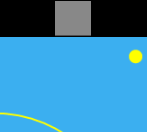
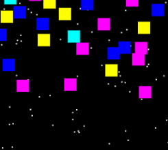

Hey! Here's some stuff I did. Most of it is just funky experimentation. A good amount of it is buggy garbage. Displayed in no particular order. Ok. Well. I guess I'll just leave you to it.
(If you want my github, well, there it is. I also work on ARISgames.org.)
(If you want my github, well, there it is. I also work on ARISgames.org.)
Scrimshaw (IN PROGRESS)
 |
Mobile game set on the high seas. Navigate an 1850's whaling ship over a landless alien planet. Uncover what lies beyond the endless ocean. |
PixQL
 |
SQL-like language for image editing. I promise it's useful- give it a try! |
Four Generals (POSTPPONED)
 |
A mobile game with a table top aesthetic. Locally networked across iOS, Android, Mac/PC. Four players come around a table to take the roles of the cardinal generals. Partner with the player opposite you to destroy your opposition. |
Monologue
 |
Made for TrainJam 2015. You are a supervillian who must deliver his final monologue to the trapped hero. But be quick, or the hero will escape! |
What Doesn't Kill You
 |
First game for OneGameAMonth 2013. Getting hurt gets you experience. Experience gets you stats. Open yourself up for double damage and quadruple experience. Can heal at will. Stay low health for big XP boosts. "What Doesn't Kill You Makes You Stronger" #clever. |
Pasiphae
 |
Second game for OGAM. Made A* and pulled this game out of my butt to accomodate it. You are the white bull trying to escape Pasiphae in her lustful rampage. Use your magic to create walls to bide your time. Seek lantern fuel to illuminate your passage. Accept your inevitable doom in the resulting labyrinth. |
A* Toy
 |
A* implementation visualizer. Check out the githubz if you want to use it/ learn/ mock my programming ability. |
Zen Fighter
 |
Made for that one Ludum Dare where the theme was "minimalism". Literally fight forever. A look at how far 2 sound effects and a clone of sonic's jump-dash-attack can take you. |
Net Pong
 |
Wanted to learn about networking, ended up learning about Node. You win some you lose some. Anyways, this probably won't work anymore. But the idea was there is this ONE instance of pong being played on the internet. And to play it, you'd have to wait in line and watch the current people playing. But yeah that's it. Cool idea though, right? |
Mavis Beacon Teaches Fighting
| |
Again, probably won't work for now. Used same model as NetPong. But it's a multiplayer fighting game where you'd have to type out your actions. Like, instead of "p" to punch. You'd have to type out "P-U-N-C-H" and if you got hit during it, you'd have to start over. Not gonna lie, I still think this idea is pretty baller. Might come back to it later. |
zomb
 |
Prototype of low-pixel 3d WebGL renderer. You're a zombie. But right now all you can do is walk around... Another victim of "build cool tech and have nothing to do with it" :( |
fprx_coolbooth
|  | I do not remember why it is called that. But its pretty and fun to play with. Made with Phil Deisinger. |
Sell Out
 |
A terrible kitty-cannon clone made for some shitty lenovo competition. I got a t-shirt out of it. Moral of the story: don't do shitty corporate competitions. I'm gonna slap it. |
Boids
|  | Assignment to make a game using the "flocking" algorithm. Ended up with an achievment hunter space invaders thing. Made w/ Andrew Zoerb. |
Boids Toy
| Fun to tweak boids algorithm. |
Game Design Machine
 |
A wonderful machine that does the hard work of game design for you! Just put in the categories and options, and pull the lever! (Saving/Loading might not work anymore) |
vedit
 |
A really bad in-browser 3d vertex editor. Can "upload" and "download" json formatted vertex data. Really, a one-off tool I made to create the arms in the zomb game. |
spline
 |
A sample use of js-spline and spline-display (download here). Also, a blog post on splines can be found here. |
Conways Game of Life
 |
Everyone's gotta implement CGoL at least once. Here's a nicely packaged JS api for creating/manipulating a GOL grid on your website! |
Moustache Sim 2014
 |
Made for a local hackathon. I won first prize. In everyone's hearts. (I did not actually win first prize.) (Rights reserved Nick Heindl) |